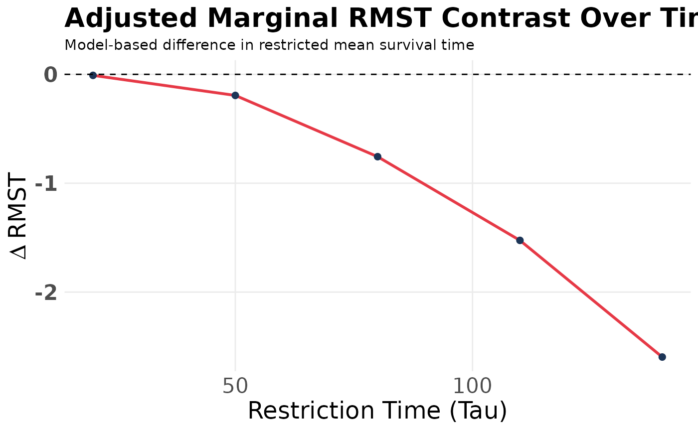
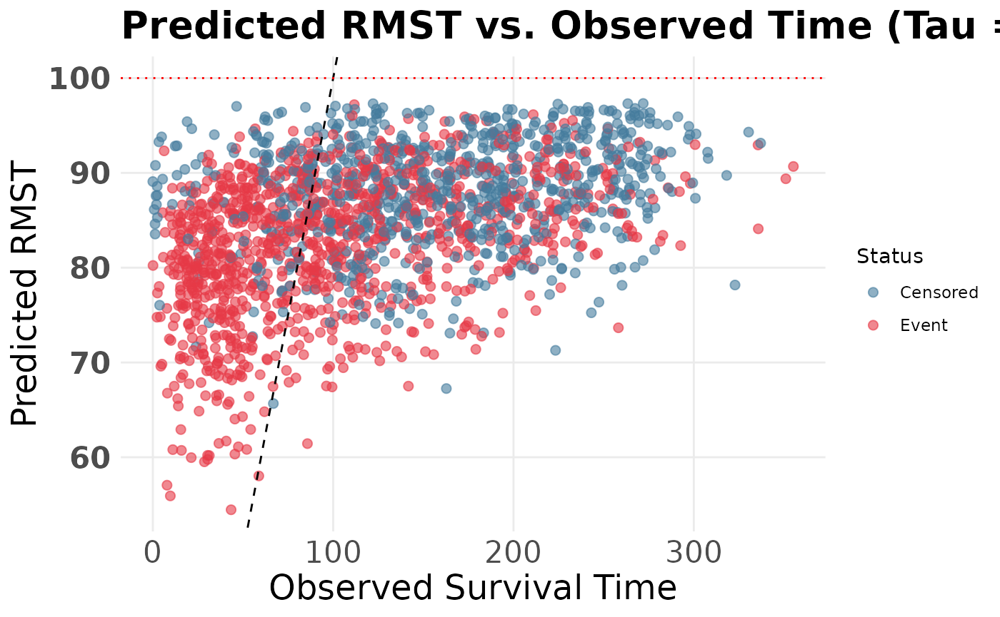

09. Causal Effects and Adjusted Marginal Contrasts (RMST)
Source:vignettes/causal-rmst.Rmd
causal-rmst.RmdMoving Beyond the Hazard Ratio
In clinical trials and observational studies, researchers often wish to compare survival outcomes between two groups. A Cox proportional hazards model summarizes relative hazards under its model assumptions. Conditional and marginal hazard ratios can differ even without confounding, and a single hazard ratio may be difficult to interpret under non-proportional hazards. These issues motivate complementary summaries on an absolute survival-time scale.
SuperSurv provides a model-based standardized contrast
in Restricted Mean Survival Time (RMST) using the
fitted survival ensemble. This does not by itself establish a causal
effect or remove model-estimation uncertainty.
RMST calculates the area under the survival curve up to a specific time horizon, . By comparing the expected RMST if everyone in the dataset belonged to Group 1 versus if everyone belonged to Group 0, we obtain a robust, absolute measure of the difference:
Philosophy: “Causal Effect” vs. “Marginal Contrast”
How you interpret this depends entirely on the nature of your exposure variable. The math of G-computation is identical for both, but the statistical terminology must be used responsibly.
-
Causal Average Treatment Effect (ATE): A causal
interpretation requires a well-defined intervention, consistency,
conditional exchangeability, positivity, appropriate censoring
assumptions, and adequate estimation of the relevant survival functions.
A manipulable exposure alone is not sufficient.
- Interpretation: “Administering this drug causally adds an average of 4.2 months of life over a 5-year period compared to the placebo.”
-
Adjusted Marginal Contrast: Without justified
causal identification, report a covariate-standardized model-based group
contrast. Standardization over the recorded covariates does not
guarantee that all confounding has been controlled.
- Interpretation: “After adjusting for all baseline clinical covariates, the presence of this biomarker is marginally associated with 4.2 additional months of survival over a 5-year period.”
Estimating the Effect with SuperSurv
Let’s demonstrate this using the built-in metabric
dataset. We will evaluate the effect of the binary biomarker
x4 (1 = present, 0 = absent). Because
x4 is a biomarker, we will interpret the result as an
Adjusted Marginal Contrast.
library(SuperSurv)
set.seed(123)
# Load built-in data
data("metabric", package = "SuperSurv")
# Define predictors and time grid
X <- metabric[, grep("^x", names(metabric))]
new.times <- seq(10, 150, by = 10)1. Train the Super Learner
First, train the ensemble. We must set
control = list(saveFitLibrary = TRUE) so the models are
saved for the G-computation prediction phase.
event_library <- c("surv.coxph", "surv.weibull")
if (has_rfsrc) {
event_library <- c("surv.coxph", "surv.rfsrc")
}
fit <- SuperSurv(
time = metabric$duration,
event = metabric$event,
X = X,
newdata = X,
new.times = new.times,
event.library = event_library,
cens.library = c("surv.coxph"),
control = list(saveFitLibrary = TRUE)
)2. Estimate the Adjusted Marginal RMST Contrast
We use the estimate_marginal_rmst() function to compute
an adjusted marginal contrast on the RMST scale. The function sets the
binary grouping variable x4 to 1 for all patients, predicts
their survival curves, integrates those predictions up to the
restriction horizon tau, and then repeats the same
procedure with x4 set to 0. The difference between these
two standardized averages yields the adjusted RMST contrast.
# Estimate the adjusted difference up to tau = 100 months
results <- estimate_marginal_rmst(
fit = fit,
data = metabric,
trt_col = "x4",
times = new.times,
tau = 100
)
#> Adjusted Delta RMST at tau = 100: -1.234 time units
print(results$ATE_RMST)
#> [1] -1.233647Interpretation: If the resulting
RMST
value is -1.24, this indicates that, after standardizing
over the observed covariate distribution using the fitted Super Learner
ensemble, the group with x4 = 1 is predicted to have
approximately 1.24 fewer months of restricted mean survival than the
group with x4 = 0 over a 100-month horizon.
Uncertainty: This function reports a model-based point contrast. Formal inference would need to account for tuning, cross-validation, learner fitting, censoring estimation, and ensemble-weight estimation using a justified inference procedure. This version does not provide such a procedure.
3. Visualizing the Effect Over Time
The difference between groups might be near zero early on but
substantial later. We can visualize how the adjusted RMST point contrast
evolves across different restriction times using
plot_marginal_rmst_curve().
The plotting examples below run only when the optional
ggplot2 package is installed; the numerical RMST estimates
above do not require it.
# Plot the Delta RMST across a sequence of tau values
tau_grid <- seq(20, 140, by = 30)
plot_marginal_rmst_curve(
fit = fit,
data = metabric,
trt_col = "x4",
times = new.times,
tau_seq = tau_grid
)
#> Adjusted Delta RMST at tau = 20: -0.009 time units
#> Adjusted Delta RMST at tau = 50: -0.194 time units
#> Adjusted Delta RMST at tau = 80: -0.756 time units
#> Adjusted Delta RMST at tau = 110: -1.525 time units
#> Adjusted Delta RMST at tau = 140: -2.597 time units
4. Diagnostic: Predicted RMST vs. Observed Time
This descriptive plot compares predicted conditional mean restricted survival with observed follow-up. A realized event time need not lie near its conditional mean, and censored follow-up is not the true event time. The plot is not a formal calibration test.
plot_rmst_vs_obs(
fit = fit,
data = metabric,
time_col = "duration",
event_col = "event",
times = new.times,
tau = 100
)